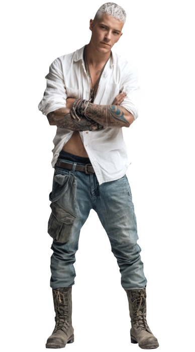
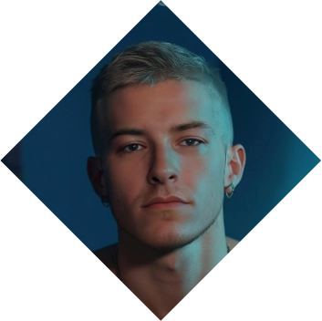
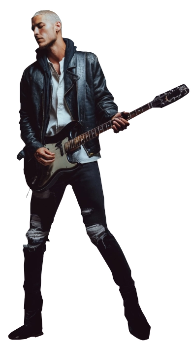

Dio Thunderbolt
Dio Thunderbolt
The Rockstar Shaman
Dio Thunderbolt, a rebel with an unyielding spirit, stands as a friend to the spirits and a staunch opponent of those who misuse power. He views power not as an end but as a privilege that demands responsibility. Blessed by the tempestuous spirit of the storm, Dio wields the ability to teleport and command elemental forces.
Handpicked by the rebellious spirit Stormrider, Dio is entrusted with the mission to oppose oppression. As the leader of a rock band, he aspires to turn his dream of becoming a rockstar into reality, blending the forces of music and rebellion to shape a destiny that resonates across realms. ❧
Plot Hooks.
Spiritual Contact. He's the contact with the spirits in this world and the next, and by spirits I mean anything: from raising the death to extra-dimensional identities, all of those fall within his scope. All through some hard riffs.Signature Motif.
Rocking out. Music is also present in his life, but unlike his other companions, he is constantly humming or playing the air drums/guitar. He's always a ball of energy, loaded in caffeine and unable to contain himself.Perfect for...
"I can heal him!" threads. Mysterious and a handful, finding a romance for him takes a second place when the pleasures of the mundane world call him. It's not impossible because he longs to be with a partner, but between his constant visions of the future and his calling, it's impossible. Is your muse up to the task? Will they be able to handle all that?Goal
Tranquility.
As a medium to the spirits, Dio is capable to hear their pleas and tends to help them. His support comes in the form of listening to them and fulfilling their desires when possible. He has understood that so long the Umbrood are at peace, then the mundane side of the world can also find peace...obstacle
Emotional Turmoil.
However, that is hard when his own emotional innerlife has it's own ups and downs. Even as calm as collected as he wants to appear, the reality is that emotions can take the best out of him, specially when mundane matters seem to be exaggerated or overly inflated.«Love is Pain, I know too well.»
Personal Data

Dio Thunderbolt
Name
30
Age
09/Dec/1995
DOB
Cult of Ecstasy
Sect
Platinum blonde
Hair
Blue
Eye color
Joybringers
subgroup
White / Middle East
Ethnicity
American / Spaniard
Nationality
Diógenes Alejandro Suárez
Real Name
1.85m
Height
90 kg
Weight
English and Spanish
Languages
Male
Gender
Homosexual
Preference
Vocalist at Stormridder
Profession
Top
Position
7.5" / 5"
length / Girth
Taz Skylar
Faceclaim
Apprentice
Rank
ESTP
MBTI
Character sheet
Attributes
Distinctions
skills
Paradigm
All the World's a Stage

Nature
Artist
Demeanor
Rogue


Creative
Expressive
Visionary
Inspirational
Intuitive
Eccentric
Self-absorbed
Unpredictable
Moodiness
Detached
Expressive
Visionary
Inspirational
Intuitive
Eccentric
Self-absorbed
Unpredictable
Moodiness
Detached
Charismatic
Independent
Stylish
Confident
Adventurous
Rebellious
Defiant
Dismissive
Different
Irresponsible
Independent
Stylish
Confident
Adventurous
Rebellious
Defiant
Dismissive
Different
Irresponsible
Strength

Dexterity
Stamina
Charisma

Manipulation
Composure
Intelligence
Wits
Resolve
Areté
🙪
Specialties
Friendly Face
Music
Martial Arts
Romantic
Performance
Subterfuge
Insight
Awareness
Occult
Empathy
Crafts
Driving
Streetwise
Athletism
Negotiation
Intimidation
Cosmology
Esoterica
Cooking
Other skills

Focus
Paradigm
Why?
All the world's a stage: Dio believes reality is a lie. Everything is created by the role Society imposes upon you. Mages are the ultimate rebels as they can look upon the face of the liers and spit back at them. Ascension has no deeper meaning, other than freedom from imposed standards. He strives for a future where the individual has as much weight in the decisions of a society.
Practices
How?
Psionics, Bardism, Mediumship and Martial Arts He believes that the World can be weaved into his liking by singing and performing (where seduction is a form of performance) to achieve a change in the world.
Paraphernalia
With what?
The following is a list of tools that he often uses:Music
Symbols
Dance and movement
Sex and Sensuality
Voices and Vocalization
Tattoos
Groupal rites

Spheres

Love
Disciple - affinity
Sense thoughts and emotionsEmpower self
Mind Shield
Read Surface Thoughts
Create Impressions
Mental Impulse
Empathetic Bond
Mental Link
Dreamwalk
Project Illusions
Psychic Blast

Envy
Disciple
Spirit SensesTouch Spirit
Manipulate Gauntlet
Pierce Gauntlet
Step Sideways
Rouse And Lull Spirit
Grief
Apprentice
Time SenseTime Sight
Thicken the Walls of Time

Sympathy
Apprentice
Immediate Spatial PerceptionsSense, Touch, Thicken And Reach Through Space
Backgrounds



Signature Assets
Bardic Gift
He is blessed to create compelling pieces of music and singing. A truly gifted individual. When rolling dice related to Art checks, choose to either reroll any Hitches or to up your Effect dice +1 category.
Storm's Warden
By some strange reason, the Avatar Storm does not affect him when crossing the Gauntlet into the Umbra. He can extend this effect to others close to him.
Enchanting Feature: Voice
His voice is warm and recognized by others as talented. Can add a D6 to the dice pool when required.
Other Assets
Fame
A well recognized name within the alternative rock scene of his city. He is the scene's darling and about to break out as a national band.
Guardian Force
A strange key given by his father, also known as the Key of Chiron. Contains a powerful spiritual entity known as Stormridder, a Horse Spirit, patron of rebells and speed. Grants rerolls of Hitches in any tests of Driving, Cosmology or Athleticism.
Demesne
A mind realm created entirely out of Dio's imagination, who come up with songs for everyone in said realm. He has made pacts as well with some Spirits to inhabit the place.